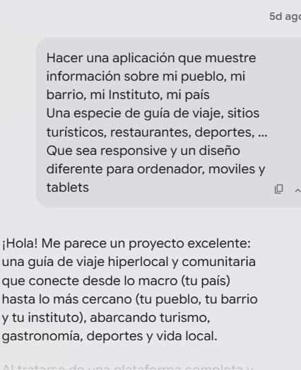

1
FASE DE INICIO · PROMPT FUNDACIONAL
IA: Google Stitch (Gemini)
Idea General del Proyecto
Prompt utilizado por el usuario:
"Hacer una aplicación que muestre información sobre mi pueblo, mi barrio, mi Instituto, mi país. Una especie de guía de viaje, sitios turísticos, restaurantes, deportes, ... Que sea responsive y un diseño diferente para ordenador, moviles y tablets"
Objetivo & Resultado:
El usuario establece las 4 entidades esenciales (país, pueblo, barrio e instituto) y fija el requisito de diseño responsive multiplataforma. La IA de Stitch responde estructurando el concepto de "guía de viaje hiperlocal y comunitaria".

Captura real del chat de Stitch